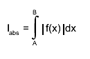
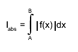

class ROOT::Math::GaussIntegrator: public ROOT::Math::VirtualIntegratorOneDim
Function Members (Methods)
public:
private:
| virtual double | DoIntegral(double a, double b, const ROOT::Math::IGenFunction* func) |
Data Members
protected:
| double | fEpsilon | Relative error. |
| const ROOT::Math::IGenFunction* | fFunction | Pointer to function used. |
| double | fLastError | Error from the last stimation. |
| double | fLastResult | Result from the last stimation. |
| bool | fUsedOnce | Bool value to check if the function was at least called once. |
| static bool | fgAbsValue | AbsValue used for the calculation of the integral |
Class Charts
{kind=link}
{kind=link}
{kind=link}
{kind=link}
Function documentation
void AbsValue(bool flag)
Static function: set the fgAbsValue flag. By default TF1::Integral uses the original function value to compute the integral However, TF1::Moment, CentralMoment require to compute the integral using the absolute value of the function.
void SetRelTolerance(double )
Implementing VirtualIntegrator Interface Set the desired relative Error.
double Integral(double a, double b)
Implementing VirtualIntegratorOneDim Interface
Returns Integral of function between a and b.
Based on original CERNLIB routine DGAUSS by Sigfried Kolbig
converted to C++ by Rene Brun
This function computes, to an attempted specified accuracy, the value
of the integral.
Method:
For any interval [a,b] we define g8(a,b) and g16(a,b) to be the 8-point
and 16-point Gaussian quadrature approximations to
 and define
Then,
where, starting with x0 = A and finishing with xk = B,
the subdivision points xi(i=1,2,...) are given by
and define
Then,
where, starting with x0 = A and finishing with xk = B,
the subdivision points xi(i=1,2,...) are given by
 is equal to the first member of the
sequence 1,1/2,1/4,... for which r(xi-1, xi) < EPS.
If, at any stage in the process of subdivision, the ratio
is equal to the first member of the
sequence 1,1/2,1/4,... for which r(xi-1, xi) < EPS.
If, at any stage in the process of subdivision, the ratio
 is so small that 1+0.005q is indistinguishable from 1 to
machine accuracy, an error exit occurs with the function value
set equal to zero.
Accuracy:
Unless there is severe cancellation of positive and negative values of
f(x) over the interval [A,B], the relative error may be considered as
specifying a bound on the <I>relative</I> error of I in the case
|I|>1, and a bound on the absolute error in the case |I|<1. More
precisely, if k is the number of sub-intervals contributing to the
approximation (see Method), and if

then the relation
is so small that 1+0.005q is indistinguishable from 1 to
machine accuracy, an error exit occurs with the function value
set equal to zero.
Accuracy:
Unless there is severe cancellation of positive and negative values of
f(x) over the interval [A,B], the relative error may be considered as
specifying a bound on the <I>relative</I> error of I in the case
|I|>1, and a bound on the absolute error in the case |I|<1. More
precisely, if k is the number of sub-intervals contributing to the
approximation (see Method), and if

then the relation
 will nearly always be true, provided the routine terminates without
printing an error message. For functions f having no singularities in
the closed interval [A,B] the accuracy will usually be much higher than
this.
Error handling:
The requested accuracy cannot be obtained (see Method).
The function value is set equal to zero.
Note 1:
Values of the function f(x) at the interval end-points A and B are not
required. The subprogram may therefore be used when these values are
undefined
will nearly always be true, provided the routine terminates without
printing an error message. For functions f having no singularities in
the closed interval [A,B] the accuracy will usually be much higher than
this.
Error handling:
The requested accuracy cannot be obtained (see Method).
The function value is set equal to zero.
Note 1:
Values of the function f(x) at the interval end-points A and B are not
required. The subprogram may therefore be used when these values are
undefined
double Integral()
Returns Integral of function on an infinite interval. This function computes, to an attempted specified accuracy, the value of the integral: Usage: In any arithmetic expression, this function has the approximate value of the integral I. The integral is mapped onto [0,1] using a transformation then integral computation is surrogated to DoIntegral.
double IntegralUp(double a)
Returns Integral of function on an upper semi-infinite interval. This function computes, to an attempted specified accuracy, the value of the integral: Usage: In any arithmetic expression, this function has the approximate value of the integral I. - A: lower end-point of integration interval. The integral is mapped onto [0,1] using a transformation then integral computation is surrogated to DoIntegral.
double IntegralLow(double b)
Returns Integral of function on a lower semi-infinite interval. This function computes, to an attempted specified accuracy, the value of the integral: Usage: In any arithmetic expression, this function has the approximate value of the integral I. - B: upper end-point of integration interval. The integral is mapped onto [0,1] using a transformation then integral computation is surrogated to DoIntegral.
void SetFunction(const ROOT::Math::IGenFunction& )
Set integration function (flag control if function must be copied inside).
\@param f Function to be used in the calculations.
double DoIntegral(double a, double b, const ROOT::Math::IGenFunction* func)
Integration surrugate method. Return integral of passed function in interval [a,b]
Derived class (like GaussLegendreIntegrator) can re-implement this method to modify to use
an improved algorithm